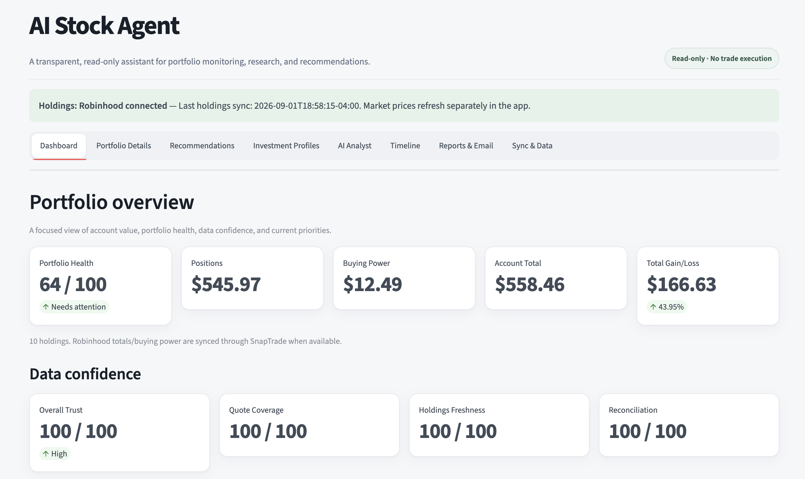
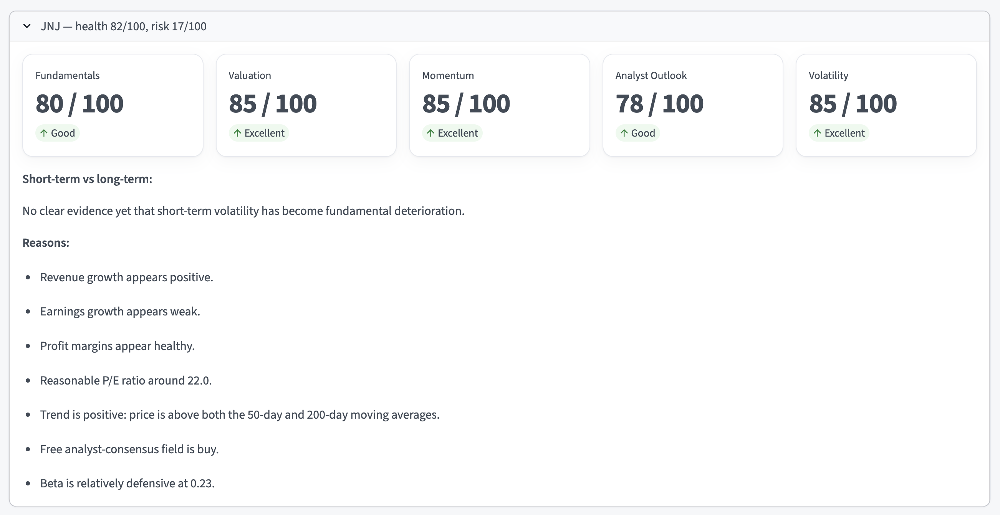
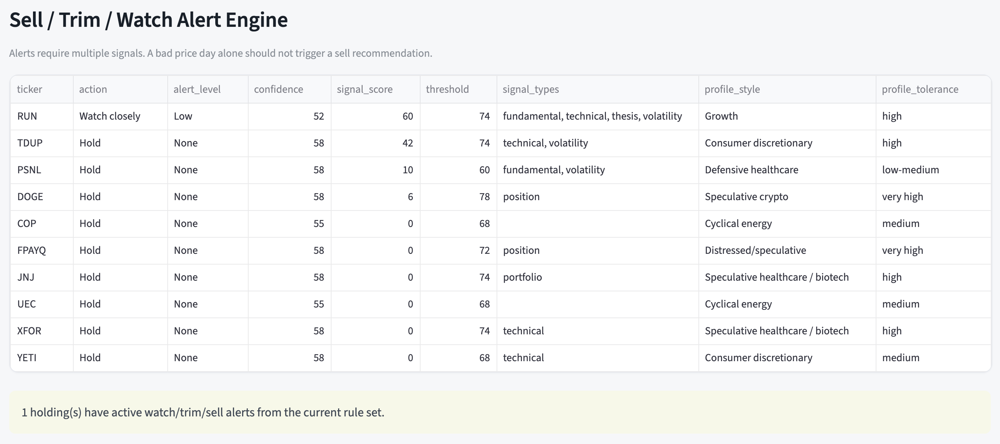
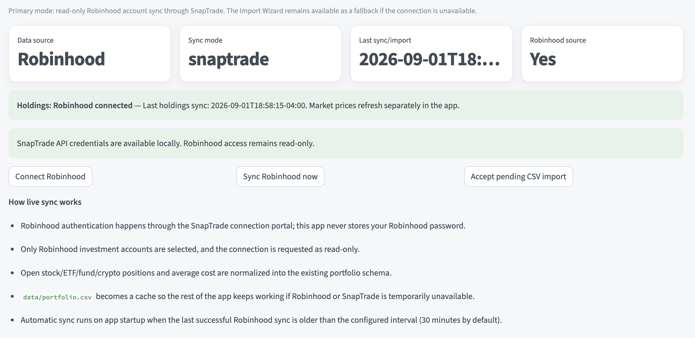

Python · Streamlit · Software Engineering
Portfolio Research Assistant
A transparent, read-only portfolio analysis system built around explainable scoring, live account synchronization, market-data diagnostics, alerts, reporting, and reproducible recommendation logic.
The design problem
Portfolio tools can surface a large amount of market data without clearly explaining how that information translates into a decision. I wanted this project to do more than display prices or generate opaque buy and sell labels.
The system is designed as an explainable research assistant: portfolio health, individual holdings, alerts, and watchlist candidates are evaluated using inspectable component scores and clearly stated reasoning.
Portfolio overview
The Streamlit dashboard provides a high-level view of the portfolio before exposing more detailed analysis. It combines portfolio health, account totals, position values, performance, and data-confidence checks in one interface.

Explainable holding analysis
Instead of assigning a single unexplained score to each holding, the system separates several dimensions of the analysis. A holding can be evaluated independently on fundamentals, valuation, momentum, analyst outlook, volatility, and broader risk.

Multi-signal alert engine
The sell / trim / watch system is intentionally conservative. A single bad price movement should not automatically create a sell signal. Alerts instead require combinations of signals such as fundamentals, technical behavior, thesis changes, volatility, and portfolio context.

Read-only account synchronization
The project can synchronize holdings through a read-only brokerage connection instead of depending exclusively on manually maintained portfolio files. Synced positions are normalized into the application's existing portfolio schema so the rest of the analysis pipeline can remain unchanged.

System architecture
The application is structured so that data acquisition, portfolio analysis, recommendation logic, reporting, and the interface remain separate concerns.
Market & account data
Retrieves market information and synchronizes portfolio holdings while tracking quote coverage, freshness, and reconciliation quality.
Portfolio analysis
Evaluates allocation, concentration, portfolio health, individual holdings, and investment-profile fit.
Decision support
Produces explainable holding signals, watchlist research, and multi-signal alerts without executing trades.
Reporting
Generates recommendation history, daily alerts, weekly reviews, and optional email delivery.
Why the analyst is rule-based
The current analyst layer is deterministic rather than generative. Questions such as “Which holdings need review?” or “Why do I own this position?” are routed to the same portfolio facts and scoring engines used elsewhere in the application.
This keeps recommendation logic reproducible and testable. A future language-model layer could make those explanations more conversational without changing the underlying decision rules.
Engineering practices
Modular design
Separate modules handle market data, portfolio scoring, reconciliation, recommendations, reports, and user-interface behavior.
Testing & CI
Automated tests, formatting and static checks, and GitHub Actions help keep changes reproducible.
Data resilience
Cached portfolio data allows the rest of the system to remain usable when an external data provider is temporarily unavailable.
Privacy
Account information, credentials, local portfolio files, and generated private reports are separated from the public repository.